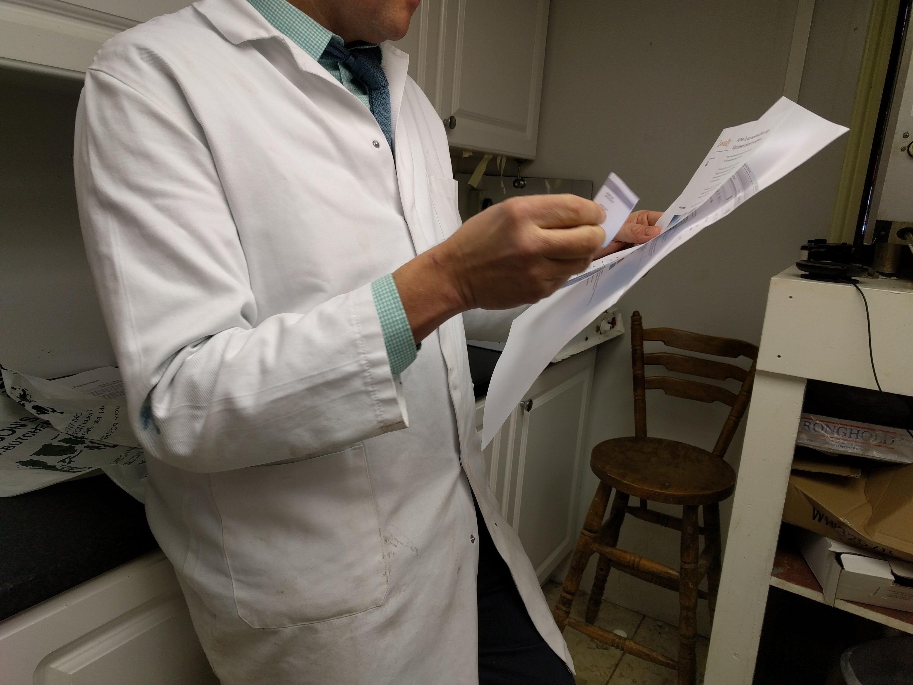

We believe people should understand and have control over the technology they use
We’re working on ways of bringing people together, that are economically viable both for them and for the Co-op. Since we believe trust is a big part of co-operation; how can we use technology to build that trust? How large do the financial incentives to co-operate need to be - or are they needed at all?
We’ve been looking at how people can and do work together for a shared good.
[Carbon clock]
[insert description]
What makes a successful co-housing project?
[insert description]
[Cars with friends]
[insert description]
[Fridge experiment]
[insert description]
[the question we made Protect together to answer]
A lack of trust has broken insurance. There’s space for Co-op to try some radically new approaches: local, mutual, community-focused and owned by members. We created a prototype of Protect together, a service allowing groups of people with something in common to form a group and insure each other. Members contribute to a fund and use it to pay smaller claims. The group can split left over money between members or invest it to reduce the group’s risk. We showed Protect together to a group of people who lived in the same area in the same type of accomodation.
We showed the prototype Protect Together to a group of people who fit the requirements for our example group. The concept of a group based purely on location and accommodation type did not go down well. The people we spoke to did not necessarily know or trust their neighbours.
However, the overall concept was well received. We should revisit our prototype, and make it possible for people to join a group based on other attributes - such as owning an expensive bikes, or already knowing each other.
See also:
A shared loyalty scheme for local retailers
It’s getting harder for independents to compete with online shops and global chains. And when those businesses shut down, they leave gaps in the local economy as well as the high street. Could Co-op encourage shoppers to spend their money locally and support their local economy? We showed 6 independent retailers in Chorlton a prototype of Locally, a scheme that earns shoppers ‘perks’, redeemable in any participating business, when they shop with local independent retailers.
Reaction to the core concept (earning points with one business and getting the perk from another) was mixed, and there were concerns about the practicalities of asking staff to use an app.
Some local retailers were open to idea behind Locally, and were interesting in seeing the concept develop. However, most did not like the idea of shoppers earning perks in other shops and redeeming them in theirs, and felt the system could disadvantage them.
We learned that independent business owners already use a diverse range of strategies to encourage loyalty to their businesses. They are ambivalent about wider loyalty schemes but take part in them with a ‘why not?’ attitude.  Getting feedback on Locally
We heard mixed opinions about local business associations, that they were old fashioned and not very effective. Local business associations as technological platforms would be an interesting area for the Co-op to explore next.
See also:
Safe and local car sharing
[insert description]
Will people lobby manufacturers to make more secure products?
People who use devices that connect to the internet (TVs, games consoles, baby monitors, security lights) in their home aren’t aware of the potential threat to their privacy. We prototyped Scout, a physical device to monitors a home wifi router, and showed it to 4 people who use these kinds of devices in their homes.
During the design process we decided to add an extra feature that allowed a group of people to team up and lobby the manufacturer to improve the security of a particular product. Scout A prototype exploring how you can monitor the devices connected on your home network. This proved to be the thing that excited people the most about Scout.
We learnt a lot more from Scout, too.
See also: